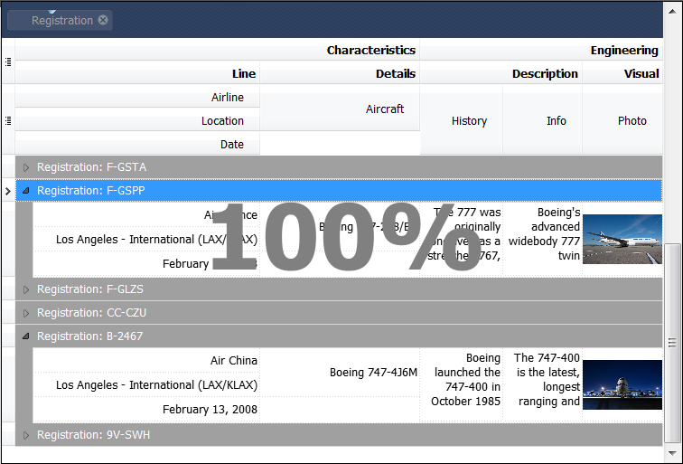
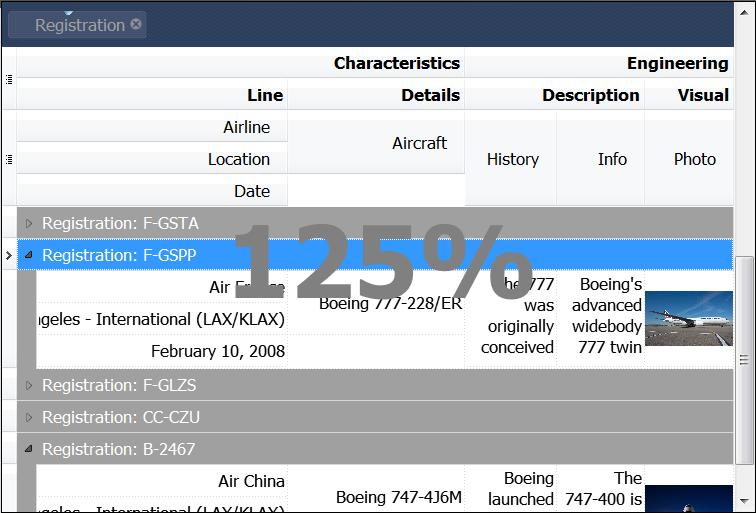

Zooming - usage and customization
Overview
In the QtitanDataGrid implemented a convenient mechanism for zooming. The mechanism allows proportional increase or decrease the size of the fonts, cells, rows, and grid's columns. For these purposes keyboard shortcuts (Control + Num+/Num-), the mouse wheel or contextual menu are used.
Zooming Usage
To enable the mechanism of zooming you can use the following code:
Qtitan::Grid* grid = ...; Qtitan::GridTableView* view = grid->view<Qtitan::GridTableView>(); view->options().setZoomEnabled(true);
The mode is enabled by default.
The minimum value for the zooming is limited to 25%. The maximum to 500%. To set the value for zooming you can use the GridViewOptions::zoomFactor() property:
Qtitan::Grid* grid = ...; Qtitan::GridTableView* view = grid->view<Qtitan::GridTableView>(); view->options().setZoomFactor(1.5); //Increase the font size to 150%
By default the GridViewOptions::zoomFactor() is 1.0 (it is equal 100%). If the property GridViewOptions::zoomEnalbed() is false, then the GridViewOptions::zoomFactor() value is ignored.
Zoom indicator customization
When the value of the zoom factor is changed then the grid for a moment highlights the current value of this property in the special indicator element. This element is called zoom indicator. Using an zoom indicator controlled by the GridViewOptions::isZoomIndicatorActive() property. The property is true by default. The size of an zoom indicator is automatically adjusted to fit the current grid's view. Thus it is always visible in the center of view and takes approximately 1/4 of its size.
100% zooming

125% zooming
